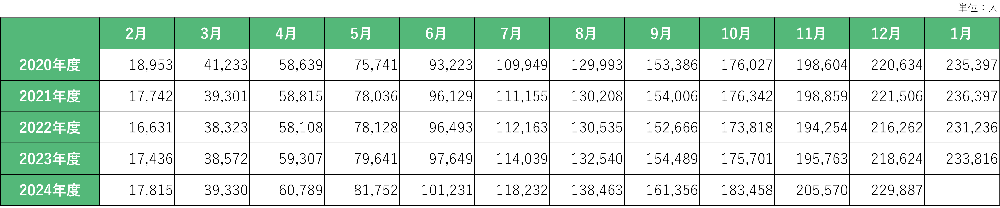

地域別構想Regional Concepts

中央地域
背景と将来像
中央地域、特に土浦駅西口地区は、大きく2つの課題を抱えています。
第一の課題は中心市街地の衰退です。築40年のモール505では74店舗中26店舗が空き店舗となり、築52年のパティオビルは旧耐震基準の建物のため安全面での対応が必要となっています。こうした状況が中心市街地の衰退に拍車をかけています。
第二の課題は防災面の脆弱性です。土浦駅周辺は浸水想定区域に位置しているにもかかわらず、浸水時の避難場所までの距離が遠いという問題があります（図C-1）。

図C-1 土浦駅周辺の浸水危険性
（課題グループE班の図を加工した）
しかし、土浦駅は1日平均14,138人が利用する交通の要所であり[c-1]、地域の発展可能性は十分にあります。この特性を利用し課題を解決するため、中央地域の将来像を定め、2つの施策を以下のように提案します（図C-2）。
図C-2 中央地域の将来像と2つの施策
施策①
一つ目の施策は、土浦駅西口の再開発です。
再開発の具体的な内容として、モール505の改修、パティオビルの刷新、空中歩道「あるかすロード」の設置、屋上広場の設置を行います（図C-3）。現在、モール505付近の高架下では子供たちがゲームや談笑する姿が見られたため、改修したモール505内には児童館を設けます。より安全に楽しめる施設を設けることで、衰退してしまったモール505の活気を取り戻すことを目指しています。また、パティオビルとモール505の上に屋上広場を設置し、市民にとっての憩いの場として愛されながらも震災時は垂直避難場所として利用します。
事業スキームとしては従前の権利を新築建物の床や新たな土地に転換する権利変換方式を採用します。まず土地所有者や借地権者が参加する再開発組合を設立します。その後、組合が主体となり、民間デベロッパーと協力して事業を推進します。市は資金面や手続き面で組合を支援し、事業の円滑な進行のサポートを行います。モール505から駅を繋ぐ空中歩道「あるかすロード」の建設・児童館の設置にかかる費用は、市が負担し、その負担を軽減するためにクラウドファンディング型ふるさと納税を行います（図C-4）。
この再開発は市だけではなく民間デベロッパーにもメリットが存在します。それは不動産価格が上昇する可能性が高いエリアを獲得できる点です。その根拠として2つあります。1つ目が土浦市がつくばエクスプレス（TX）の延伸を目指していることです。現在、TX沿線の地域である流山市やつくば市は急激に成長しています。そのことから土浦市もTX延伸が叶えば、将来的な発展が期待できます。2つ目がこの再開発によって「あるかすロード」が生まれ、駅周辺の回遊性が向上し、パティオビルやモール505への来訪がより容易になることです。現在、モール505北側地域から通勤通学で駅を利用する市民は、信号や横断歩道のある地上の道を通る必要があるが、再開発後はモール505から土浦駅まで同じ階層でつながることで、より安全で便利な動線が確保されるため、パティオビルやモール505への来訪者が増加することが期待されます。これらの理由から民間デベロッパーにもメリットがある再開発になると考えます。

図C-3 再開発の詳細

図C-4 再開発の事業スキーム（費用計算の参考[c-2]）
施策②
二つ目の施策は、電動アシスト付き自転車のシェアサイクル拡大です。
施策の具体的な内容としては、現在ステーション数が12か所、台数が約25台で運営されているシェアサイクル事業[c-3]を市が資金面で補助し、拡大を目指すことです。
事業スキームは、土浦市がシェアサイクル事業者の初期費用を負担し、事業者が市民に対してサービスを提供します。利用料金は事業者に入りますが、収支がマイナスの場合、土浦市が補填を行う仕組みになっています（図C-5）。事業費用としては、初期費用が700～1400万円（電動アシスト付き自転車30台、ステーション6か所）、年間のサービス維持費用が約1300万円と見込んでいます。このとき、初期費用の一部（実施設計費と設備整備費）は、1/3を補助金として国から補助を受けることができます[c-4]。

図C-5 電動アシスト付き自転車のシェアサイクルの事業スキーム
このサービスは、中央地域外から土浦駅周辺施設（モール505、市役所など）を訪れる利用者をメインターゲットとしており、これまで目的の施設のみの利用にとどまっていた来訪者の行動範囲を広げ、イオンモール土浦や亀城公園周辺の店舗への回遊を促進することを目指しています（図C-6）。また、「つちうらランチマップ」（図C-7）を活用し、中央地域にある魅力的な店舗を利用してもらうことで、中心市街地の活性化につなげる計画です。
図C-6 シェアサイクルのターゲット
図C-7 つちうらランチマップ（土浦市観光協会より引用[c-5]）
効果
土浦駅西口の再開発と電動アシスト付き自転車のシェアサイクル拡大により以下の3つの効果が期待されます。
1. 中心市街地活性化
新モール505、新パティオビルの設置によりさまざまな世代を対象とした魅力的なテナントが入ることやいつでもだれでも入れる屋上広場を設置することで様々な世代の多くの人が集い、市街地の活性化につながることが期待されます。
2. 回遊性の向上
モール505、パティオビル、アルカス土浦を繋ぐ空中歩道「あるかすロード」を設置することで、土浦駅前の回遊性の向上が期待されます。回遊性を階層移動や道路の横断なく移動できる面積として評価すると再開発により移動可能な床面積が17410㎡から22160㎡となり回遊性が1.27倍に上昇すると評価できます。また、前述の通り、中央地域外から土浦駅周辺施設（モール505、市役所など）利用者がこれまでは目的の施設だけの利用にとどまっていたものが、シェアサイクル拡大によって、行動範囲が広がりイオンモール土浦や亀城公園周辺のお店までアクセス可能になり、中心市街地の賑わい向上にもつながると考えます。
3. 防災性の向上
パティオビル刷新のなかでパティオビルの耐震補強をすることで、現状のパティオビルより耐震性の高い建物となります。また、屋上広場は浸水時の垂直避難場所とすることで、駅周辺に滞在している市民の避難距離を現在より短縮できます。
参考文献
[c-1]JR東日本：各駅の乗車人員 2023年度（2025年2月15日閲覧）
[c-2]山城地所：建物の価値は計算で算出できる！計算式と具体例を紹介（2025年2月15日閲覧）
[c-3]HELLO CYCLING：土浦市のシェアサイクル（2024年12月19日閲覧）
おおつ野地域
背景と将来像
おおつ野地域は土浦市において数少ない人口増加地域です。現在は子育て世代を中心とした地域となっていますが、図O-1のように数十年後には子育てが終わって親だけが残り、ニュータウン特有の高齢化が進む恐れがあります。共働きが当たり前となっている今、子世帯*1が子育て施設を除いて頼れる存在は親世帯*2であると考えます。一方で、親世帯も老後の介護が必要な年齢が近づいてきており、子世帯の助けが必要となる場面も増えつつあります。そのため今のうちから相互に助け合える関係をつくりやすくすることで、より良い暮らしやすいまちを形成できるのではないかと考えます。すでに「まちなか居住推進事業」で、土浦駅周辺の賃貸住宅家賃補助やまちなか住宅購入等借入金補助金[o-1]を行っていますが、今回は以上の背景を踏まえて、住宅建設を目的とする未利用地が多いおおつ野地域をモデル地域として「おおつ野三世代近居・同居促進制度」という新たな施策を提案します（図O-2）。
図O-1 高齢者人口の増減予測数（2020→2040）[o-2]
図O-2 おおつ野地域の将来像と施策
施策
「おおつ野三世代近居・同居促進制度」は、主にはおおつ野で育った子世帯のUターンを促進し、介護や子育てしやすい環境の基盤づくりを促す施策です。また、今回の施策は、松戸市の事例[o-3]、土浦市のまちなか賃貸住宅家賃補助、まちなか住宅購入等借入金補助金[o-1]の事例を参考にして、改良を加えつつ構築しました。
初めに、対象者と対象要件は以下の通りです。
＜対象者＞
・義務教育終了前の子供がいる核家族世帯、または結婚5年以内の夫婦
＜対象要件＞
・親世帯がおおつ野地域*3に3年以上継続して居住していること
・子世帯及び親世帯に市税の滞納がないこと
・子育て世帯及び親世帯に、暴力団員による不当な行為の防止等に関する法律第2条第6号に規定する暴力団員がいないこと
次に、助成内容は以下の通りです。
＜助成内容＞
・住宅取得費用：最大80万円

図O-3 住宅取得費用助成金の内訳
※1：一定期間は10年以上継続して居住すること
※2：近居した場合に支援対象となるのは子世帯のみ
※3：以下の助成対象面積基準を満たすこと
【近居】戸建住宅（ひとり親家庭の場合を除く）：95平方メートル以上
【近居】戸建住宅（ひとり親家庭の場合に限る）：75平方メートル以上
【同居】戸建住宅（ひとり親家庭の場合を除く）：120平方メートル以上
【同居】戸建住宅（ひとり親家庭の場合に限る）：95平方メートル以上
※4：取得する住宅の名義は子世帯で持ち分の2分の1以上を満たすこと
※5：新規物件だけではなく中古物件にも制度が適用される
・賃貸住宅費用：最大36万円
助成額は（月額家賃 - 住宅手当）× 1/2以内
近居の場合、月最大10,000円で最長2年間
同居の場合、月最大15,000円で最長2年間
※1：この助成は一度しか受けることができない
※2：賃貸住宅費用の助成を受けた後、住宅取得費用の助成を受けることはできない
※3：賃貸住宅費用は1年後にまとめて助成金を支払う
※4：1000円未満の端数は切り捨てる
・引っ越し費用：最大5万円
※1：おおつ野地域に引っ越して来るときのみ助成を受けることが可能である
※2：引っ越し業者または運送業者に支払った引っ越し費用が対象である
※3：これは住宅取得、賃貸契約費用の助成と同時に受けることが可能である
・住宅改修費用（バリアフリー改修、リフォームなど）：最大30万円
※1：近居で住宅改修費用を助成する場合は親世帯、子世帯の住宅どちらか選択することができ、一回のみ助成を受けることが可能である
※2：住宅取得費用の助成を受けた後も住宅改修費用の助成を受けることが可能である
※3：他の支援制度などと併用することが可能である
以上を踏まえて、松戸市の事例[o-3]、土浦市のまちなか賃貸住宅家賃補助、まちなか住宅購入等借入金補助金[o-1]の事例を参考にし、今後20年間助成することを考え、用意する助成金を3,424万円と設定します。
効果
「おおつ野三世代近居・同居促進制度」による20年後の効果を、三世代近居・同居している世帯数の数で比較して算出しました（図O-4）。
助成金ありの場合、予算の3,424万円以内で最大限費用を使って実施した施策によって、住宅取得により18世帯、賃貸住宅は24世帯助成を受け、住宅改修の利用を5世帯、助成を受けた全ての世帯42世帯が引っ越しの助成を受けておおつ野に住居を移すと考えられます。その中でも賃貸住宅は転居する可能性があるため、最終的には助成金により20世帯が居続けると想定します。つまり、「おおつ野近居・同居促進制度」によって20年後には38世帯増加すると想定します。
このとき、38世帯増加することにより、2020年の三世代居住者世帯数が21世帯であるため、2040年では21＋38=59（世帯）となり、三世代居住の世帯数が助成金なしに比べて約2.7倍に増加します。したがって、一時的な介護や子育て支援から、長期的な介護や子育て支援まで、現在より“もっと”対処することが可能になります。
図O-4 住宅取得費用助成金の内訳（a2020、x2020、x2040は令和2年国勢調査[o-4]より）
他の地域への展開
今回はおおつ野地域をモデル地域として施策の提案を行いましたが、他の地域への展開方法として、「近居」の定義の拡大が考えられます。今回の施策では「親世帯がおおつ野地域のみに居住していること」を条件にしましたが、「親世帯が土浦市に居住していること」と近居の定義を拡大することで支援対象の公平性の拡大だけでなく、おおつ野地域への居住集約にも繋がると考えます。
参考文献
[o-1]土浦市：まちなか賃貸住宅家賃補助 まちなか住宅購入等借入金補助金の手引き（2025年2月15日閲覧）
[o-2]国土数値情報 500mメッシュ別将来推計人口データ（H30国政局推計）（shape形式版）を加工して作成
[o-3]松戸市：三世代同居等住宅取得支援～子育て世帯の住宅取得を応援します～（2025年2月15日閲覧）
[o-4]「政府統計の総合窓口(e-Stat)」、令和2年国勢調査「人口等基本集計 （主な内容：男女・年齢・配偶関係，世帯の構成，住居の状態，母子・父子世帯，国籍など）」
*1 子世帯：親世帯から独立して生活している世帯（結婚した夫婦・ひとり親・一人暮らし中の成人の子供）と定義します。
*2 親世帯：18歳以上40歳未満の子供を持つ子育てを終えた夫婦と定義します。
*3 おおつ野地域はおおつ野1丁目～8丁目のことを指します。
神立地域
背景と将来像
神立駅周辺では、駅を境に北はかすみがうら市、南は土浦市にわかれています。神立駅周辺では近年再開発が行われており、西口側は土地区画整理事業が行われました。東口側でも歩行者専用道路の整備が行われ、市民が暮らしやすいまちづくりへの動きも進んでいます。一方で、現在神立駅の東口側はかすみがうら市の住宅地と土浦市の市街化調整区域が隣接し、土地が上手に活用されていない状態です（図K-1）。かすみがうら市にとって神立駅近辺は重要な拠点であり、この地域で質の良い住環境の整備やサービスの提供を行うためには、お互いの市がよりよい協力関係を築いていくことが大切です。

図K-1 神立駅周辺の様子（Google Mapを加工）
さて、土浦市の荒川沖駅周辺や神立駅の西側などを見てみると、車通りが多いにもかかわらず、道幅が狭く危険なエリアが存在します。街中に駐車場が点在しており、自動車を利用するにしても歩行者として利用するにしても不便な状態です。このような都市計画が神立駅東口側でも行われた場合、地域の不便性が解消されずむしろ将来的に住みにくい場所となってしまいます。また、神立駅東口側にはスーパー等の生活商業施設がなく、住宅地の創出だけでは生活の不便さに欠ける恐れがあります。神立駅東側ではこのような無秩序な開発を防ぎ、生活基盤や道路基盤を整えて、市民にとって暮らしやすいまちづくりを考える必要があります。
そこで、神立地域の将来像を以下のように定めました（図K-2）。

図K-2 神立地域の将来像と施策
施策
神立駅東口側に対して、土浦市では現在まちづくりの方針を検討中であることが都市計画課の方へのヒアリングでわかりました。そこで、今回の提案ではマスタープラン[k-1]にある住宅創出の推進だけではなく、道路の整備や東口側の商業圏の設定を提案します。
現在の道路は自動車が多く通るにもかかわらず幅員が狭いものや歩道の整備がされていない場所があります。そのような道路の整備だけでなく、この地域に住宅地が出来た際の渋滞の可能性を見越した新たな道路の設定や駐車場の配置が必要です。
効果
以上の施策の効果として神立駅東口側の利便性の向上と秩序だった住宅地の形成が見込まれます。
現在神立駅東口側に生活商業施設がないことで西口側まで買い物に行く必要があります。図K-3は、神立東一丁目地区からの現在の買い物施設までの所要時間と、新たに東口側（神立駅前・神立東一丁目地区内）に生活商業施設を設けた場合の所要時間を分析したものです。現在の買い物施設までは平均片道12分かかっていますが、東口側に新たに設けた場合には、約5～8分と最大7分の時間の短縮に繋がります。また、通勤で神立駅を使う市民がいることを考えると、帰りがけに一度西口側へ降りる、という手間をなくすことことで暮らしやすさの向上に貢献するものであると考えられます。

図K-3 神立駅東側に生活商業施設が出来た場合の買い物施設までの距離の分析結果
参考文献
南部地域
背景と将来像
南部地域では、荒川沖駅を中心に公共交通網が整備されています。路線バスが通っていない交通不便地域に向けた交通として、「つちまるバス」や「乗り合いタクシー土浦」といったコミュニティ交通が整備されています（図M-1）。南部地域を主に通る「つちまるバス」では、「中村南・西根南地区経由」と「右籾地区経由」の二つの路線が運行されています（図M-2）。また、乙戸南地区を通る路線も新規導入の準備が進められています。
一方で、これらの公共交通網があるものの、バスの運行本数が少ないことが課題となっています。土浦市マスタープランにおける南部地域の都市整備に関する満足度調査でも、「公共交通機関の整備」が求められています[m-1]。
また、荒川沖駅は阿見町の利用者も多く、阿見町の玄関口としての役割も担っています。しかしながら、阿見町から荒川沖駅へのアクセスは十分とは言えません。阿見町にとって、荒川沖市街地の交通網の整備は、阿見市街地として設定されている阿見町北部の公共交通の整備状況に比べて課題であると言えます（図M-3、図M-4）。
阿見町では、バスが通っていない地域を補完する交通手段として「デマンドタクシーあみまるくん」が運行されていますが、利用者が少ない状況です。
このように、荒川沖駅周辺の交通網は十分に整備されているとは言えず、交通不便地域の存在やバスの運行本数の少なさが課題となっています。
図M-1 土浦市の公共交通イメージ（土浦市地域公共交通計画（概要版）[m-2]より引用）
図M-2 つちまるバスの路線図（土浦市HP[m-3]より引用）
図M-3 阿見町の土地利用状況（阿見町地域公共交通計画[m-4]より引用）
図M-4 阿見町の公共交通と利用圏域（阿見町地域公共交通計画[m-4]より引用）
したがって、南部地域では駅周辺の利便性を向上させるため、以下の図M-5に示す将来像と2つの施策を提案します。
図M-5 南部地域の将来像と2つの施策
施策①
一つ目の施策は、つちまるバスの阿見町への延伸です。
現在運行しているつちまるバスの「右籾地区経由」の路線の一部を変更し、阿見町方面へと延伸します。新規路線では、荒川沖駅を出発して阿見町の交通不便地区を通り、既存のバス停である「善慶西」で既存の路線と接続する経路となります（図M-6）。
図M-6 つちまるバスの延伸
施策②
二つ目の施策は、あみまるくんの土浦市南部への拡大です。
現状では阿見町民専用の運行となっているデマンドタクシー「あみまるくん」の利用範囲を土浦市南部まで拡大します（図M-7）。この施策では、土浦市南部の住民の「あみまるくん」の利用を可能にし、阿見町民の土浦市南部への移動も可能にすることで、各施設の相互利用の促進を図ります。
図M-7 あみまるくん利用範囲拡大イメージ
費用と収支率の算出
以上の施策による費用と収支率の変化について算出を行います。
1. 施策によって増加する経費の試算
施策①：つちまるバス
図M-8 つちまるバスの増加経費
施策②：あみまるくん
図M-9 あみまるくんの増加経費
2. 収支率の計算
※A,B,Cのデータは令和5年度県内市町村が運行する地域公共交通システムデータ一覧[m-6]を参照しています。

図M-10 つちまるバスの収支率
※1：新規路線の利用者数は沿線路線人口（GISで算出）をもとに算出
※2：新規路線のCは(新規路線のB)×(右籾地区のB/C)で算出
※3：国庫補助金（フィーダー系統確保維持費）[m-10]より算出
図M-11 あみまるくんの収支率
※1：拡大後の利用者数は土浦市南部地域の阿見町の人口比をもとに算出
※2：拡大後の運賃収入は(拡大後のB)×(あみまるくんのC/B)で算出
※3：国庫補助金（フィーダー系統確保維持費）[m-10]より算出
効果
1. 両自治体への効果
収支率の変化は、まとめると以下の図M-12、図M-13のとおりです。
両サービスの収支率が向上することで、両自治体の負担減、さらには各コミュニティ交通の維持につながることが期待されます。
図M-12 つちまるバスの収支率の変化
図M-13 あみまるくんの収支率の変化
2. 両市町の住民への効果
つちまるバスの延伸によって、阿見町民の荒川沖駅や土浦市南部へのアクセス性が向上します。また、あみまるくんの利用範囲が拡大することで、土浦市民の土浦市南部内や阿見町へのアクセス性が向上します。さらに、両市町に共通して公共交通の選択肢が増え、それぞれの生活スタイルに合った公共交通を選択することが可能になります。
参考文献
[m-1]土浦市：土浦市都市計画マスタープラン 第4章～資料編（2025年2月11日閲覧）
[m-2]土浦市：土浦市地域公共交通計画（概要版）（2025年2月11日閲覧）
[m-3]土浦市：つちまるバス路線図（2025年2月11日閲覧）
[m-4]阿見町：阿見町地域公共交通計画（2025年2月11日閲覧）
[m-5]土浦市：土浦市地域公共交通計画（2025年2月11日閲覧）
[m-6]茨城県：令和5年度 県内市町村が運行する地域公共交通システムデータ一覧（2025年2月11日閲覧）
[m-7]土浦市：土浦市地区別人口及び世帯数一覧（2025年2月11日閲覧）
[m-8]茨城県：令和5年（2023年）茨城県の人口 茨城県常住人口調査結果報告書（2025年2月11日閲覧）
新治地域
背景と将来像
新治地域は豊かな自然に囲まれた地域であり、土浦市の農業ブランドを支える存在となっています。旧新治庁舎周辺には3校の小学校と中学校が統合された新治義務教育学校やJA水郷つくばサンフレッシュ新治店（以後、JA水郷つくば）、新治地区公民館が立地しています。JA水郷つくば本店の担当者様へのヒアリングから、2023年度のJA水郷つくばの来客数は約23万人であると伺っており（図N-1）、新治地域の地域内交流の拠点として旧新治庁舎周辺のポテンシャルは十分にあると考えられます。
図N-1 JA水郷つくばの年間来客数（各年度2月からの累計人数）
その一方で、新治地域は土浦市の中で人口が少ない地域であるうえ、老年人口が多く増加傾向、また新治地域内の人口もその中で分散している状況です[n-1]。また、新治地域も他の土浦市内の地域と同様に公共施設の老朽化が進んでおり、施設の新造やリニューアルが求められています。そして、各公共施設の利用者は、求められる利用者数よりも低い水準となっています[n-2]。新治地域では小学校の統合など一部の公共施設の複合化が進み、他の公共施設の複合化も検討段階にありますが、具体的な進捗は見られていません。
したがって、新治地域は人口が少なく分散しているにもかかわらず、各施設の利用者自体もそれぞれの施設に分散し、利用者の少ない状況が課題となっています。これは施設の維持費がかかるだけではなく、市民のコミュニティの分散にも繋がってしまいます。
以上より、新治地域ではJA水郷つくばの利用者が多いというポテンシャルを活用して、世代を超えたコミュニティをより強固にすること、またその機会を与える公共施設を提供することが必要です。したがって、以下の図N-2のように新治地域の将来像を定め、施策を提案します。

図N-2 新治地域の将来像と施策
施策
以上の課題の解決と、ポテンシャルを活かして、私たちは公共施設3つ（新治児童館、新治総合福祉センター、農業センター）を、JA水郷つくばと新治公民館、新治トレーニングセンターなどの旧新治庁舎周辺地区の既存施設付近（＝事業地）に複合することを提案します（図N-3）。

図N-3 複合施設の場所
効果
公共施設の複合により、以下の3つの効果が期待されます。
1. 施設利用者増加による交流機会増加

図N-4 各施設の利用者数
2. 施設への移動距離（時間）の短縮
また、事業地内への複合は市民の移動時間の短縮に繋げられます。図N-5は、現在の公共施設それぞれまでの新治地域に住む市民一人あたりの直線移動距離を表したものです。事業地の施設であるJA水郷つくば、新治地区公民館、新治トレーニングセンター、保健センター新治分室が1,950m前後であるのに対し、事業地へ複合する新治総合福祉センター、新治児童館、農業センターはおよそ2,300m～2,700mあります。このことから現在の3施設は、平均的により移動距離が短く利用しやすい場所に移転し、その機能をまとめることで市民にとっての利便性の向上に寄与できると考えられます。

図N-5 各施設までの平均移動距離
3. 施設維持・建設費用の削減
また、公共施設の複合によって、今後のリニューアルにかかる費用や公共施設の維持費を抑え、長期的な収支の削減が可能です。
・建設費用の削減
はじめに、これらの公共施設の複合にかかる費用については、既存施設の解体費用と新規複合施設の建設費用に分けられます。ここで、それぞれの施設の面積は以下の図N-6の通りです。
図N-6 各施設の施設面積（Googleマップ[n-3]を用いて算出）
RC造の解体平均費用は1坪8万円で、1坪は3.3m2ゆえに、解体費用は(415+2,547+1,271)×80,000/3.3=約1億267万円と計算できます[n-4]。また、新規複合施設の建設費用は、3階建ての建物を建設する必要があると仮定すると、鉄骨造ビル建設平均費用である1坪70万円をもとに、建物面積から単純計算で1,452×70,0000/3.3=約3億811万円と計算でき[n-5]、合計費用が約4億1,078万円となります。
一方、既存施設をそのまま使う場合、長寿命化のための改修工事が必要になります。その場合にかかる費用は新治児童館が1億500万円、新治総合福祉センターが4億7,700万円、農業センターが5億1,800万円、合計11億円です[n-2]。よって、複合施設を建設することで約6億8,922万円の削減につながります。
・維持費用の削減
次に、維持費用に関しては、光熱費、人件費、修繕費など、主に公共施設の維持管理費の削減に期待ができます。これらの費用は、市民一人当たりの純行政コストから算出しました[n-6]。
まず、市民一人当たりの純行政コストに関して、図N-7の200円未満を100円、200-400円を300円、400-600円を500円、600-800円を700円、800円以上を900円として、それぞれの割合をかけることによって、施設分類別の平均的な純行政コストを計算しました。その結果、新治児童館にあたる子育て支援施設は218.6円、新治総合福祉センターにあたる保健・福祉施設は299.8円、農業センターにあたる行政施設は232.9円、新規複合施設にあたるコミュニティ・文化施設は274円と算出されます。この金額を土浦市の人口約14.22万人にあてはめ、既存施設の維持費は年間で合計1億682万円となります。一方、新規複合施設を建設した場合の維持費は、同じ方法で3,896万円と算出され、維持費についても年間約6,786万円の節約になります。
図N-7 施設分類別市民一人当たり純行政コスト（平成30年度から令和2年度の3カ年平均）
（土浦市公共施設等再編・再配置計画[n-6]より引用）
参考文献
[n-1]土浦市：土浦市都市計画マスタープラン 第4章～資料編（2025年2月11日閲覧）
[n-2]土浦市：178施設の配置方針策定フロー（2025年2月11日閲覧）
[n-3]Google：Googleマップ（2025年2月15日閲覧）
[n-4]LIFULL HOME'S：家の解体費用はいくら？更地にするメリットとデメリットについても解説（2025年2月15日閲覧）